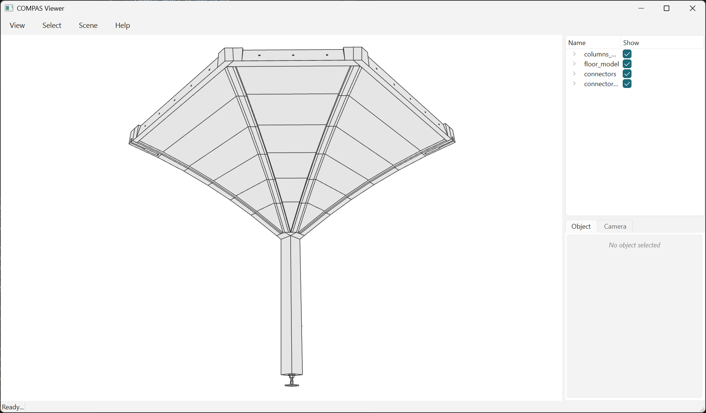

Extract one column and one cantilever¤
Any named group can be lifted out as a model of its own. One column plus the cantilever it carries is the unit that gets assembled on site.

The 46 elements that make a bay, and nothing else - cut off along the seams where the next quarters would begin.
import pathlib
from collections import Counter
import compas
from compas_model.elements import Group
from compas_viewer import Viewer
from compas_tf.connectors import ConnectorElement
from compas_tf.connectors import DowelCylinderElement
from compas_tf.model import TFModel
from compas_tf.viewer import zoom_to
data_dir = pathlib.Path(__file__).parent.parent / "data"
MODEL_FILE = data_dir / "cantilevers_baked_model.json" # the file example_model_19 reads
BAY_FILE = data_dir / "bay_model.json"
model: TFModel = compas.json_load(MODEL_FILE)
# What mounts this cantilever on its column. The wedges and their bolts are
# inner-beam hardware and the outer-rib connectors join one quarter to the next,
# so neither is here. Put a type back and it comes back with it.
FASTENERS = (
ConnectorElement,
DowelCylinderElement,
)
# Both groups in one call: the contacts BETWEEN them survive only if they come
# out together. The fastener groups hold all four bays' hardware and cannot be
# named, so neighbors= takes this bay's own - by contact, and by bounding box for
# the dowels, which have no graph edge because the contact search skipped them.
# Types, not True: True also admits the quarters next door and the oculus.
bay = model.find_groups_with_names(
["column_model_0", "quarter_model_0"],
name="bay_0",
neighbors=FASTENERS,
)
whole = Counter(type(element).__name__ for element in model.geometry_elements())
part = Counter(type(element).__name__ for element in bay.geometry_elements())
print(f"bay_0: {sum(part.values())} of {sum(whole.values())} elements, {len(list(bay.contacts()))} of {len(list(model.contacts()))} contacts")
for kind, count in part.most_common():
print(f" {count:4d} of {whole[kind]:4d} {kind}")
# The same tree pruned to what the bay contains, not a bag of parts.
def print_tree(node, depth=0):
for child in node.children:
element = child.element
if not isinstance(element, Group):
continue
parts = sum(1 for n in child.descendants if not isinstance(n.element, Group))
print(f"{' ' * depth}{element.name} ({parts} parts)")
print_tree(child, depth + 1)
print_tree(bay.tree.root)
# Fresh guids, source untouched: a model in its own right.
compas.json_dump(bay, BAY_FILE)
viewer = Viewer()
def add_tree(node, parent=None):
for child in node.children:
element = child.element
if isinstance(element, Group):
add_tree(child, viewer.scene.add_group(element.name, parent=parent))
elif element.modelgeometry is not None:
viewer.scene.add(element, name=element.name, parent=parent)
add_tree(bay.tree.root)
# The camera's far plane is 1000 mm, so without this the bay starts clipped.
zoom_to(viewer, [element.aabb for element in bay.geometry_elements()])
viewer.show()
bay_0: 46 of 237 elements, 143 of 733 contacts
34 of 145 PlateElement
8 of 32 DowelCylinderElement
2 of 8 ConnectorElement
1 of 4 SupportElement
1 of 4 ColumnElement
columns_model (2 parts)
column_model_0 (2 parts)
floor_model (34 parts)
quarters_model (34 parts)
quarter_model_0 (34 parts)
beds_0 (18 parts)
beds_0_0 (6 parts)
beds_1_0 (6 parts)
beds_2_0 (6 parts)
tsections_0 (6 parts)
outer_ribs_0 (2 parts)
inner_ribs_0 (2 parts)
wedges_inner_beams_0 (3 parts)
inner_beams_0 (3 parts)
connectors (2 parts)
connector_cylinders (8 parts)
Every group keeps its place, so the bay is the same tree pruned to what it contains, not a bag of parts. The copy is independent - fresh guids - and writes to JSON or STEP like any other model.
Both groups in one call. The contacts between the column and its cantilever survive only if the two come out together; extracting each on its own and merging drops exactly that joint.
neighbors= takes types, not True. The fasteners live in top-level groups
holding all four bays' hardware, so they cannot be named - neighbors= finds
this bay's own, by contact for the connectors and by bounding box for the dowels,
which the contact search skipped and which therefore have no graph edge.
neighbors=False 36 elements, 125 contacts
neighbors=FASTENERS 46 elements, 143 contacts
neighbors=True 77 elements, 208 contacts
True admits anything that touches: four plates from the quarters next door,
two oculus plates, and then connector_wedge_7's cylinders, whose boxes overlap
one of those oculus plates. Naming the types stops that at the first step.
The groups you can name:
floor_model 185 parts
quarters_model 136
quarter_model_0 .. _3 34 each
beds_0, tsections_0, outer_ribs_0, inner_ribs_0,
wedges_inner_beams_0, inner_beams_0
oculus_model 9
connectors 40
columns_model 8
column_model_0 .. _3 2 each
connectors 8
connector_cylinders 32
outer_rib_connectors 4
A name that matches nothing raises ModelElementNotFound.